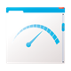

Önerenler
EagleGet önyargılarımızı yıktı ve beklentilerimizden fazlasını çıkardı, EagleGet sıradan bir indirme hızlandırıcısı değil.
— Softpedia
EagleGet çekici ve modern bir arayüze sahip. Ücretsiz, tamamen özelleştirilebilir, kullanımı kolay ve masaüstünüzdeki diğer medya ile ilgili programları gereksiz hale getirecek bazı ekstra araçları ile geliyor.
— Software Informer
EagleGet yalnızca yavaş indirmelerinizi hızlandırmıyor, aynı zamanda çeşitli web sitelerinden video indirmenizi de sağlıyor. Az deneyimli kullanıcılar için basit ve kolay kullanımlı bir kullanıcı arayüzüne sahip.
— Computer Bild Polonya Ekibi
Biz EagleGet in arkasındaki geliştirmeler ve çalışmalarından oldukça etkilendik, kesinlikle bugünden itibaren masaüstümüzde FlashGet in yerini alacak.
— Blogsdna
EagleGet temizliği ile memnun eden arayüzü ve kullanışlı bir tarayıcı entegrasyonu ile çok güzel bir indirme yöneticisi. EagleGet i gerçekten sevdim ve tüm kalbimle tavsiye ederim.
— FreewareGenius
EagleGet, ücretsiz yazılımlarınızdan biri ve bilgisayarınızda görsel olarak çekici bir indirme yöneticisi. Yavaş indirme hızından bıktıysanız, o zaman EagleGet ihtiyacınız olan tek şey.
— MakeUseOf
Diğer indirme yöenticileri ile karşılaştırırsak, EagleGet birçok avantajlara sahip, ve yakında herkes için GEREKLİ bir uygulama olacaktır.
— pplware
EagleGet, kullanımı kolay ve etkili bir dosya yöneticisi olarak kesinlikle birçok memnun kullanıcıya ulaşmış.
— Programosy.pl
EagleGet performansıyla bizi son derece memnun etti sizide memnun edecektir, ve tamamen ücretsiz!
— Technobezz
IDM dahil, birçok indirme yöneticisi kullandım. EagleGet çok daha basit ve direkt bir kullanıcı arayüzü var, karalı ve hızlı indiriyor. Hepsinden iyisi, ÜCRETSİZ.
— The Windows Club Kullanıcıları
Özellikler

İndirme Hızını Büyük Ölçüde Artırır
EagleGet dosyaları birçok parçaya ayırarak indiren gelişmiş çoklu iş-parçacığı teknolojisini kullanır, böylece indirme hızınız 6 kata kadar artar!
İndirmelerinizi Zamanlayın ve Zekice Yönetin
EagleGet size indirmelerinizde mükemmel kontrol sağlar. Çeşitli kriterler ile indirilenleri sıralar, çoklu indirmeleri zamana göre sıralar, indirme hızı sınırlayıcı ve hatta fiziksel olarak gereksiz indirmeleri arayüzden silebilirsiniz.
Süresi Dolan İndirme Adreslerini Otomatik Yeniler
EagleGet size zaman kazandırarak süresi dolan indirme bağlantılarınızı indirmeyi baştan almadan otomatik yeniler. Şunu belirtmekte fayda var, EagleGet bu özelliği ücretsiz sunan ilk indirme yöneticisidir.
Tüm Popüler Tarayıcıları Destekler
EagleGet tüm popüler tarayıcıları destekler, Chrome, Firefox, Opera ve IE. Hangi tarayıcıyı kullandığınızın bir önemi yok, her zaman sınırlama olmadan yüksek indirme hızının keyfini çıkarabilirsiniz.
Videolarınızı ve Ses Dosyalarınızı TÜM Sitelerden İndirin
EagleGet otomatik olarak her sitedeki medyayı yakalar. HD videoları Chrome, Firefox, Opera ve ya IE içinden indirebilir, yada özel Medya Yakalayıcı + Video Yakalayıcı ile toplu indirmeler ekleyebilirsiniz.
Videoları İstediğiniz Formata Dönüştürür
EagleGet sadece HD videoları indirmekle kalmıyor, bunun yanında medya dönüşütürücü gibi kullanılabilir. Tek tıklama ile iPhone ve akıllı telefonlarınız için zil sesleri yapın, istediğiniz biçime indirilen müzik ve videoları dönüştürebilirsiniz.
Esnek Bildirim Yapılandırmaları & Sessiz Mod
EagleGet devam eden indirmeleriniz hakkında bilgi almanız için birden fazla yol sunar. Özel Sessiz Mod ile tam ekran bir uygulama açık olduğunda uyarı almazsınız ve ya sevdiğiniz bir oyunu oynarken etkinleştirebilirsiniz.
Otomatik Virüs Kontrolü ve Dosya Bütünlüğü Denetleyicisi
EagleGet sizin güvenliğinizi önemsiyor. Otomatik virüs denetleyicisi dosya indikten sonra Anti-Virüs programınız ile tarama yapar. MD5/SHA1 doğrulayıcı indirilen dosyanın orijinal olup olmadığını kontrol eder.
Özelleştirilebir Kullanıcı Arayüzü
EagleGet size arayüzün görünümü ve düzenini değiştirme imkanı sağlar. Güçlü ve ücretsiz indirme yöneticinizi görsel olarak daha çekici yapmak için favori renginizi veya arkaplan görüntünüzü seçebilirsiniz.
Çoklu Dil Desteği
EagleGet 30 dan fazla dile çevrilmiştir, bunlar Arapça, Çince, Fransızca, Almanca, Yunanca, İtalyanca, Endonezya, Japonca, Malayca, Lehçe, Portekizce, Rusça, Romence, İspanyolca, Türkçe, Vietnamca…
Ücretsiz Sorunsuz Bir Deneyim Sunar
EagleGet in iyi tasarlanmış arayüzü ve işlevselliği size daha az çaba ile daha fazlasını yaptırır. Hepsinden iyisi, EagleGet tamamen ücretsizdir.